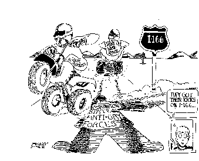

RMIsaac@eskimo.com RichPage
CONTENTS:
*Bio & Background
*Pictures
*Travel
*Recreation
*Friends

AGE b. 2 November 1962, 5 Cheshvan 5723
HEIGHT 5'8"
WEIGHT 160 lbs
EYES hazel behind glasses
HAIR auburn?, "van dyke"
RACE pale
ETHNICITY Romanian (Baie Mare)/Hungarian (Ungvar, now Uzhgorod)
RELIGION Jewish atheist, raised Reform
AKA Menahem (Mendel); Rashid
POLITICS left of center
STATUS single and looking
SEXUALITY gay/queer; *
BEAR 1.9.1: B 2/3 f- t- w- g(+) k(+/-) s(+) e r-
GEEK 1.0.1: GU d-(---) p- c+(++) l? u e- m+ s-/- n-(---) f g* w(-) t+ r y+
TWINK 1.12: T6 C4 L2(s) h+ d-(--) a-(--) w- c- e (t2,6) k s(+)
PEARCE: a3 b3/4!3 c4!4 d4 e5 g f0 g7 h4s H245!4 i6+ k4 m4 p(4*6) q4
r(3*4) s9. t4 w2/3 xaj
YIDDISHKEIT: S- SC- Fa.n/a Ng--- M- K-/- H+++ Yid+ Lad- Ara- tI AT/+ -/SY P-
FO/-,s,m,hh D&D+ Tz E++ L/- Am I/+ Ha/0 hc FH IPL++
EMPLOYMENT library assistant, Bastyr University, Seattle
INTERESTS politics, languages, travel, Israel, science fiction,
tv, media, film, hockey, theatre, the Web, Israeli music,
pinochle
HOMETOWN Worcester MA USA
LOCATION Seattle WA USA; arrived 6 Sept 1990
 EDUCATION BA in Linguistics, University of Pennsylvania, 1984;
one-year program, Hebrew University, Jerusalem, 1986/7; two
intensive summer language programs (Spanish, Arabic) at
Middlebury College in Vermont
LANGUAGES Hebrew, Arabic, Spanish: competent
French, Amer. Sign Language: passable
Yiddish, Korean: poor
Mandarin Chinese: in progress
German: enough to get by
EDUCATION BA in Linguistics, University of Pennsylvania, 1984;
one-year program, Hebrew University, Jerusalem, 1986/7; two
intensive summer language programs (Spanish, Arabic) at
Middlebury College in Vermont
LANGUAGES Hebrew, Arabic, Spanish: competent
French, Amer. Sign Language: passable
Yiddish, Korean: poor
Mandarin Chinese: in progress
German: enough to get by
TRAVEL
 Israel, 1977, 1978, 1986/87
Israel, 1977, 1978, 1986/87
- Egypt, 1986, 1987
- London, 1987
 Eastern Europe: Berlin, Prague,
Krakow, Budapest and environs (Sept 1997), read about my trip here, and about its Gay & Jewish sides here... PICTURES NOW
AVAILABLE AT THE ABOVE LINKS OR JUST SCROLL UP TO THE PICTURES LIST
Eastern Europe: Berlin, Prague,
Krakow, Budapest and environs (Sept 1997), read about my trip here, and about its Gay & Jewish sides here... PICTURES NOW
AVAILABLE AT THE ABOVE LINKS OR JUST SCROLL UP TO THE PICTURES LIST
- Puerto Vallarta:
April 1998, October 2002; another Puerto
Vallarta site here
- Montreal, 1971, 1973, 1975, 1982, 1984, 1988, 1989, 1990
 San
Francisco, 1995, 1996, 2001
San
Francisco, 1995, 1996, 2001
- New Mexico (Albuquerque, Taos, Santa Fe), 1994
- Los Angeles, 1992
- Hawaii, 1971-72
- Virgin Is., 1970
- Bermuda, 1969
- the Pacific Northwest (Washington, Vancouver, Victoria), 1990-present
- the East Coast (New England to
Washington DC), 1962-1999

RECREATION:
I am also on the Steering
Committee of SEAMEC, which is a volunteer
organization which issues non-partisan ratings of candidates for office in
Seattle, King County and Washington State in regards to their views on
issues of concern to the gay, lesbian, bisexual and transgender
communities.
I am Treasurer of Bigot
Busters: "Democracy in Action": we provide voter education "at the
point of sale," where signatures are being gathered for anti-gay citizens
initiatives 166
and 167
in Washington State; this is called "counter-petitioning"
and proved instrumental in the defeat of I-608 and I-610 in 1994.
Friends of mine with homepages:
- Andrew Higgins
- Chris Flanagan; also the site for
Food Not Bombs/Seattle
- Joseph Singer, aka Dov,
bear
extraordinaire; also here
 Weiser, Idaho's own
Gary Kenley
Weiser, Idaho's own
Gary Kenley
- Good friend Kent Johnson runs Morningside
Academy, an innovative school for ADHD kids
- Wayne Bitterman
- College buddy and senior-year roommate Randy Riesenberg,
Philadelphia
- Another Penn pal, Sheldon Granor, also of Philly, and
his family
- Jim Phoenix
- Amy
Sue Chase: Random Meanderings at Middle Age: a friend from way back
- Kenneth
Sherrill, Dep't of Political Science, Hunter College, CUNY
- Lev Raphael: author of a
number of books on Jewish and gay themes, including Winter Eyes and
Dancing on Tisha B'Av
 Comments? Write me at RMIsaac@eskimo.com
Comments? Write me at RMIsaac@eskimo.com
Approximately  hits on all subdirectories since 28 July 1995
hits on all subdirectories since 28 July 1995
 ichard:
ichard: